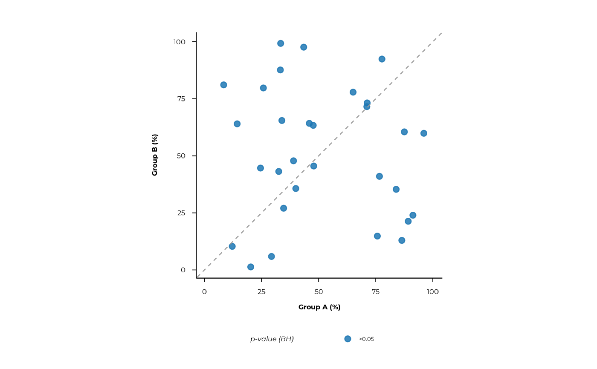

Static scatterplot of percent1 vs percent2 from compute_pop()
Source: R/pop_plots.R
scatter_static.RdA ggplot2 scatterplot comparing prevalence in group a vs group b.
Default coloring uses BH-corrected p-values computed per-plot from p_raw:
"significant (BH)", "nominal only", "not significant".
If only one category is present the plot falls back to p-value bins.
When color_by is supplied as a named vector, peptide metadata is joined and
points matching the specified values are highlighted. Multiple groups may be
given simultaneously:
Usage
scatter_static(
df,
pair = NULL,
rank = NULL,
xlab = NULL,
ylab = NULL,
alpha = 0.05,
color_by = NULL,
color_title = NULL,
...
)Arguments
- df
A data frame with prevalence results.
- pair
optional group pair (character length-2).
- rank
optional single rank (character) to keep.
- xlab, ylab
axis labels; defaults to
pair[1]/pair[2]whenpairis given.- alpha
numeric in (0,1]; significance threshold for category labels.
- color_by
optional named vector identifying peptide-library values to highlight, e.g.
c("is_flagellum" = TRUE)orc("species" = "Staphylococcus aureus").- color_title
optional legend title when
color_byis used.- ...
graphical parameters:
point_size(default 2),point_alpha(default 0.85),jitter_width_pp(default 0),jitter_height_pp(default 0),font_family,font_size(default 12).
Examples
set.seed(1)
prev <- data.frame(
rank = "peptide_id",
feature = paste0("pep", 1:30),
group1 = "A",
group2 = "B",
prop1 = runif(30),
prop2 = runif(30),
percent1 = runif(30, 0, 100),
percent2 = runif(30, 0, 100),
ratio = runif(30, 0.1, 10),
p_raw = runif(30),
n_peptides = 1L
)
# basic plot
scatter_static(prev)
# filter to a specific pair and set axis labels
scatter_static(prev,
pair = c("A", "B"),
xlab = "Group A (%)",
ylab = "Group B (%)",
alpha = 0.05
)
